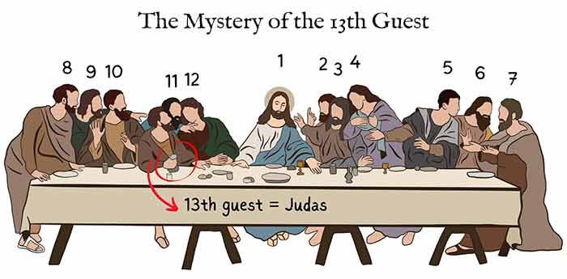

13
Introduction
Throughout history, numbers have played a vital role in human culture and spirituality. The number 13, in particular, has always sparked intrigue and fascination. Known for its mix of superstitions and deeper spiritual significance, 13 is far more than just a number.
literary
Another historical event that fuels this superstition is the Trials of the Knights Templar. On Friday, October 13, 1307, King Philip IV of France ordered the arrest of hundreds of Knights Templar. The knights were accused of heresy and subjected to torture and execution. This dramatic event further cemented Friday the 13th’s reputation as a day of misfortune and tragedy.
The Code of Hammurabi was one of the earliest and most comprehensive legal codes to be proclaimed and written down. It dates back to the Babylonian King Hammurabi, who reigned from 1792 to 1750 BCE. Carved onto a massive stone pillar, the code set out some 282 rules, including fines and punishments for various misdeeds, but the 13th rule was notably missing. The artifact is often cited as one of the earliest recorded instances of 13 being perceived as unlucky and therefore omitted. Some scholars argue, however, that it was simply a clerical error. Either way, it may well have contributed to the long-standing negative associations surrounding the number 13.
Religion
In Christianity
Friday the 13th has long been considered one of the unluckiest days in Western culture. This superstition likely stems from a combination of the negative associations with both the number 13 and the day Friday. In Christianity, Friday is traditionally seen as an unlucky day, often connected to Good Friday, the day of Jesus’ crucifixion
Another historical event that fuels this superstition is the Trials of the Knights Templar. On Friday, October 13, 1307, King Philip IV of France ordered the arrest of hundreds of Knights Templar. The knights were accused of heresy and subjected to torture and execution. This dramatic event further cemented Friday the 13th’s reputation as a day of misfortune and tragedy.
One common superstition involves the belief that having 13 guests at a dinner table is an omen of bad luck. This idea may have originated from the story of the Last Supper, where Jesus dined with his 12 apostles. Judas Iscariot, who would go on to betray Jesus, was the 13th guest at the table, cementing the number’s association with misfortune.

In Judaism
In Judaism, 13 signifies the age at which a boy matures and becomes a Bar Mitzvah, i.e., a full member of the Jewish faith (counts as a member of Minyan). It is also the number of principles of Jewish faith according to Maimonides. According to Rabbinic commentary on the Torah, God has 13 Attributes of Mercy.
Mythologie
Norse mythology
In Norse mythology, where the trickster god Loki was the 13th guest at a banquet in Valhalla. Loki’s arrival brought chaos and tragedy, as he caused the death of Balder, the god of light and joy. This story further reinforces the idea that the 13th guest brings misfortune and upheaval.
Chinese culture
Interestingly, not all cultures view the number 13 as unlucky. In Chinese culture, the pronunciation of the number 13 (十三) sounds like the phrase for “definitely alive”, symbolizing longevity and good fortune.but because of its ties with four is also associated with bad luck. 1 + 3 = 4 and four is the number of death, but the word four and the word death in China sound the same.